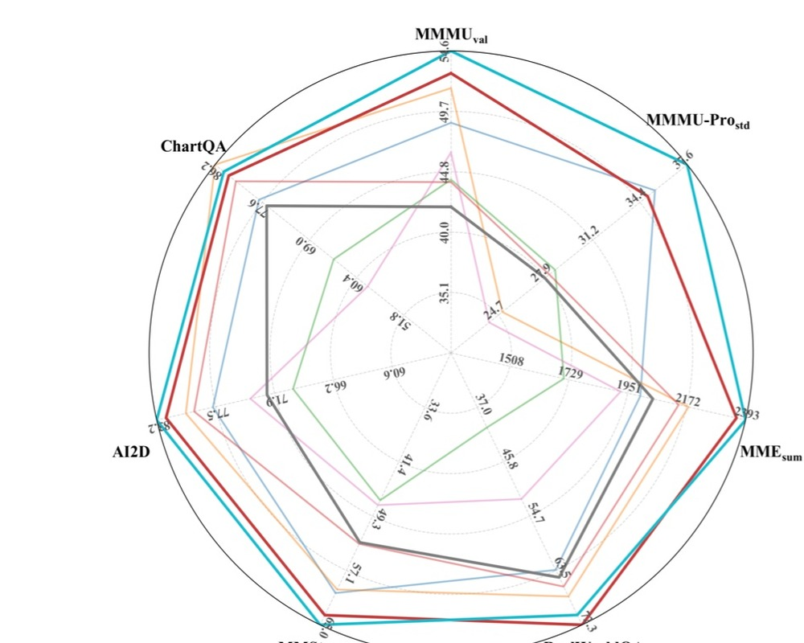
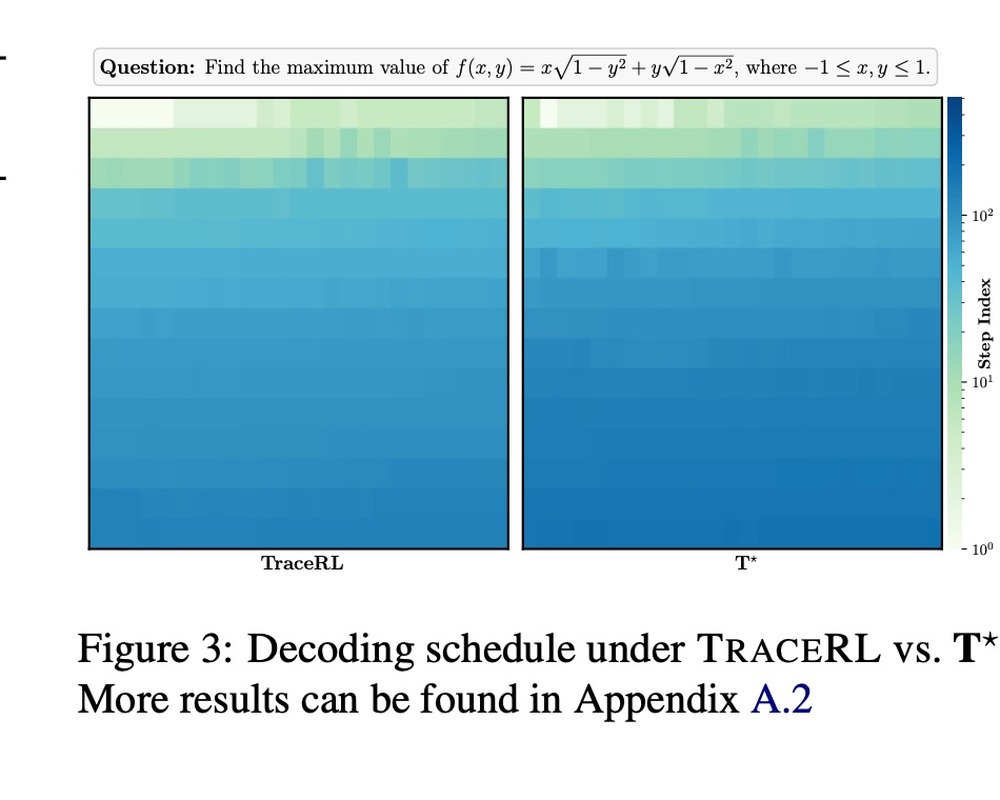
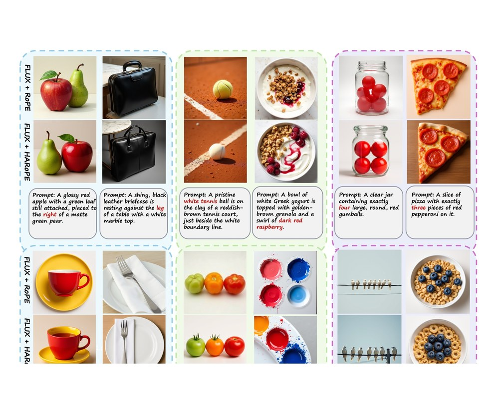
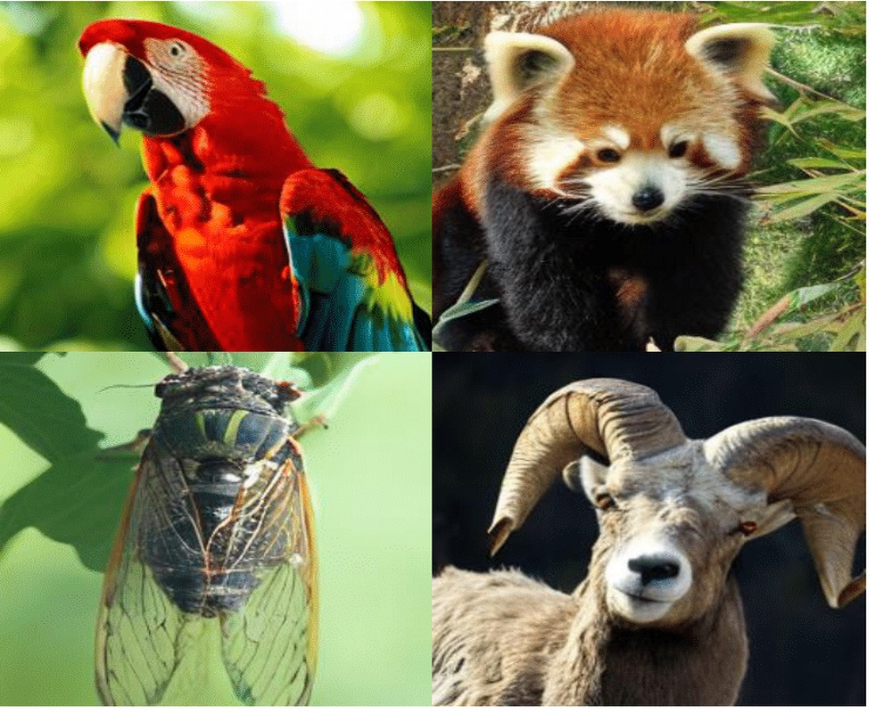
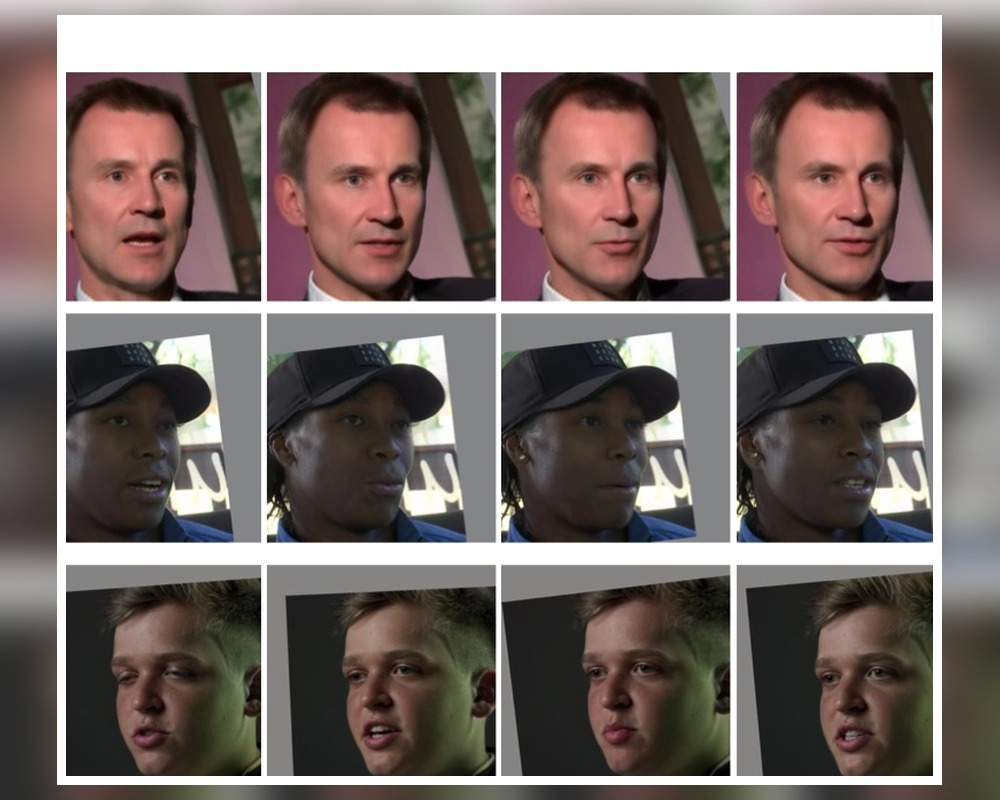
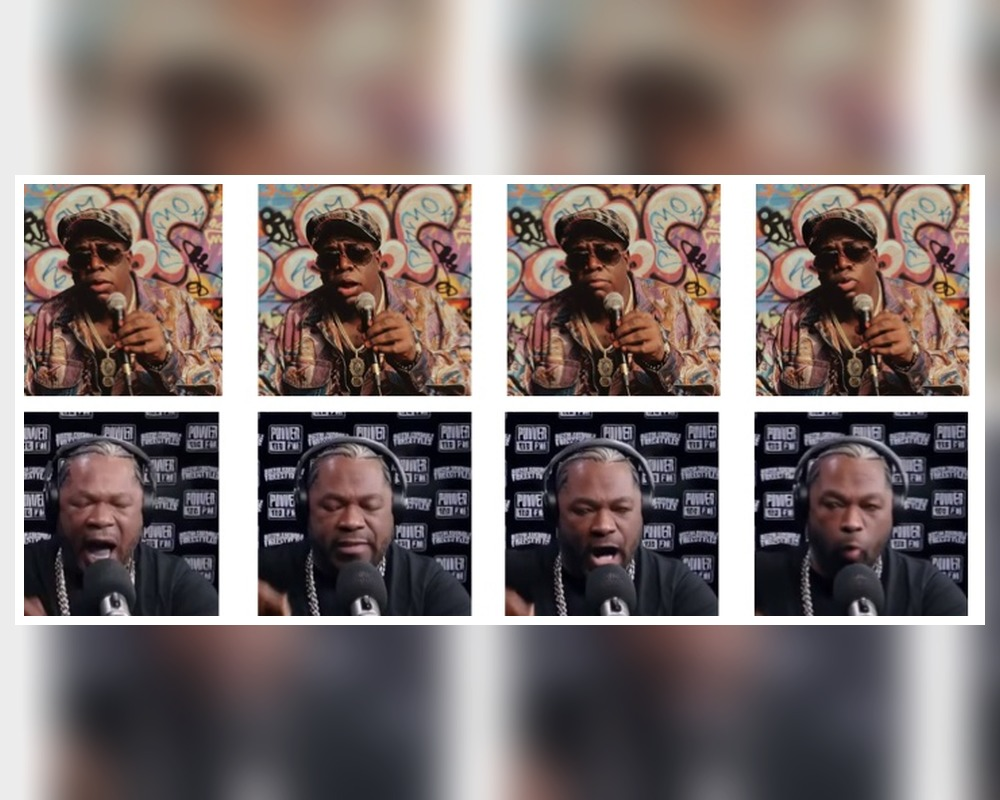

Biography
I am a first-year Ph.D. student in Computer Science at Fudan University, advised by Prof. Siyu Zhu. My research lies in diffusion-based generative modeling, with a focus on building unified models for multimodal understanding and generation.
Before joining Fudan University, I received my B.Eng. degree in Electronic Engineering from Zhejiang University. I have also gained research experience in both industry and academia, including autonomous driving at Alibaba DAMO Academy, and image/video generation and 2D/3D talking-head modeling at Bilibili.
Research Interests
- Diffusion Models
- Multimodal Understanding and Generation
Projects & Publications

Multimodal Models
BARD: Bridging AutoRegressive and Diffusion Vision-Language Models via Highly Efficient Progressive Block Merging and Stage-Wise Distillation
Authors: Baoyou Chen, Hanchen Xia, Peng Tu, Haojun Shi, Liwei Zhang, Weihao Yuan, Siyu Zhu
Date: Apr. 2026 arXiv 2026
Description: BARD bridges autoregressive and diffusion vision-language models with progressive block merging and stage-wise distillation, targeting efficient multimodal understanding and generation.
Latent Poincare Shaping for Agentic Reinforcement Learning
Authors: Hanchen Xia, Baoyou Chen, Zelin Zang, Yutang Ge, Guojiang Zhao, Siyu Zhu
Date: Feb. 2026 arXiv 2026
Description: LaPha shapes latent representations with hyperbolic geometry to support more effective reinforcement learning for agentic reasoning and decision-making.

Diffusion LMs
T*: Progressive Block Scaling for Masked Diffusion Language Models Through Trajectory Aware Reinforcement Learning
Authors: Hanchen Xia, Baoyou Chen, Yutang Ge, Guojiang Zhao, Siyu Zhu
Date: Jan. 2026 ACL 2026
Description: T* studies block-size scaling for masked diffusion language models and uses trajectory-aware reinforcement learning to improve generation quality and efficiency.

Image Generation
Head-wise Adaptive Rotary Positional Encoding for Fine-Grained Image Generation
Authors: Jiaye Li, Baoyou Chen, Hui Li, Zilong Dong, Jingdong Wang, Siyu Zhu
Date: Oct. 2025 CVPR 2026
Description: HARoPE introduces head-wise adaptive rotary positional encoding to improve fine-grained spatial modeling in diffusion transformers for image generation.

Visual Generation
Pyramidal Patchification Flow for Visual Generation
Authors: Hui Li, Baoyou Chen, Liwei Zhang, Jiaye Li, Jingdong Wang, Siyu Zhu
Date: Jun. 2025 ICLR 2026
Description: PPFlow accelerates diffusion transformers by varying patch sizes across denoising timesteps, using larger patches at high-noise stages and smaller patches at low-noise stages.

Face Restoration
Dirichlet-Constrained Variational Codebook Learning for Temporally Coherent Video Face Restoration
Authors: Baoyou Chen*, Ce Liu*, Weihao Yuan, Zilong Dong, Siyu Zhu
Date: Jun. 2025 ICCV 2025 Highlight
Description: DicFace restores degraded face videos by extending image VQ-VAE priors into temporally coherent video priors with Dirichlet-constrained latent transitions and spatio-temporal modeling.

Portrait Animation
Hallo4: High-Fidelity Dynamic Portrait Animation via Direct Preference Optimization and Temporal Motion Modulation
Authors: Jiahao Cui*, Baoyou Chen*, Mingwang Xu*, Hanlin Shang, Yuxuan Chen, Yun Zhan, Zilong Dong, Yao Yao, Jingdong Wang, Siyu Zhu
Date: May 2025 SIGGRAPH Asia 2025
Description: Hallo4 improves high-resolution portrait animation by combining direct preference optimization with temporal motion modulation for long-duration, high-fidelity talking-head generation.